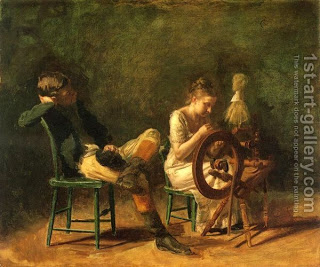

Bava Batra 89 - Honest Measures

The punishment for false measures is more severe than that for illicit relationships. In regard to ".. all these ..." illicit relationships, a shorter form of "these" - "el" is used, but in regard to false measures, "... all who do these ..." a longer form "eleh" is used. Why? One cannot remember all those he has cheated and return money to them.
" You shall not have in your house false measures ..." - why in your house? It is forbidden everywhere! This teaches that "you shall not have in your house" because of false measures.
In some places it is a custom of sellers to add a little extra to the scale on which the produce is weighted, while in others sellers add a little after weighing. One should not deviate from the prevailing custom, because it may lead an onlooker to make a mistake in the future.